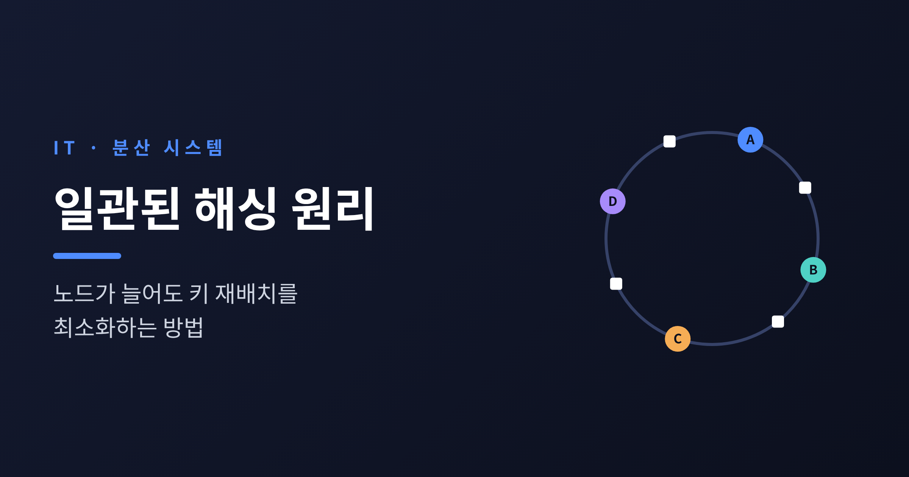
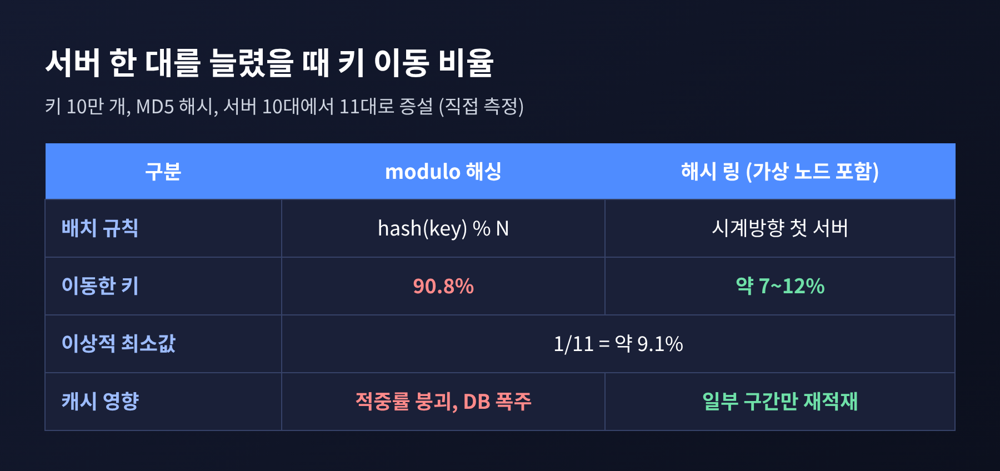
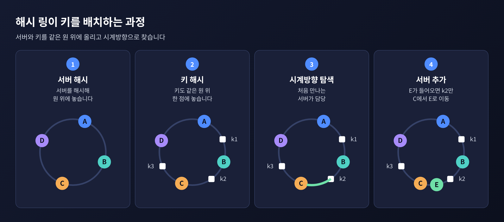
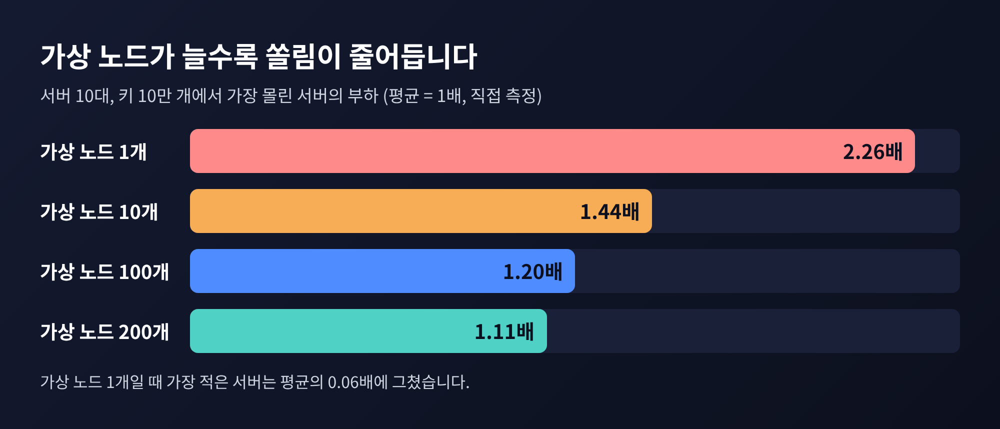
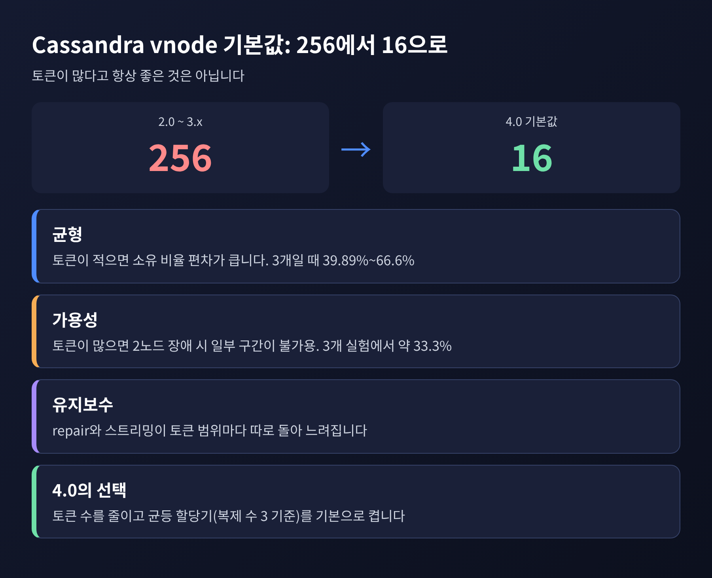
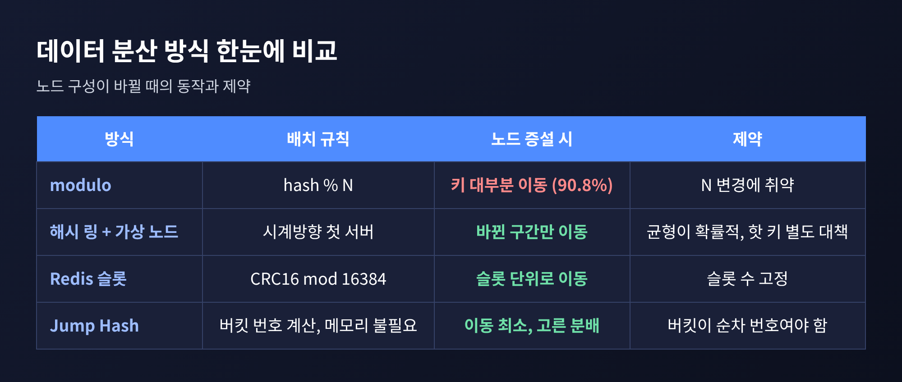

이번 글에서는 일관된 해싱(Consistent Hashing)을 정리해 보겠습니다. 분산 캐시나 DB에서 서버를 늘리거나 줄여도 옮겨야 할 데이터를 최소로 줄이는 방법입니다. 해시 링과 가상 노드의 원리, 실제 사용 사례, 그리고 한계까지 차례로 살펴봅니다.
세 줄 요약
가장 단순한 분산 방식은 이렇습니다. 키를 해시한 값을 서버 수로 나눈 나머지가 곧 담당 서버입니다. hash(key) % N입니다.
서버 수가 고정이라면 이보다 간단한 방법도 드뭅니다. 문제는 N이 바뀌는 순간입니다.
직접 확인해 보았습니다. 키 10만 개를 MD5로 해시해 서버 4대에 나눈 뒤 5대로 늘렸더니, 80.0%의 키가 담당 서버가 바뀌었습니다. 10대에서 11대로 한 대만 늘리면 90.8%가 바뀌었습니다. 나머지 연산의 특성상 이론값(1-1/N)과 거의 같은 결과입니다.
캐시라면 이것은 곧 적중률 붕괴입니다. 거의 모든 요청이 캐시에서 빗나가 원본 DB로 쏟아집니다. 서버를 한 대 늘렸을 뿐인데 장애가 나는 셈입니다.

일관된 해싱은 1997년 MIT의 David Karger 등이 ACM STOC에서 발표한 논문에서 출발했습니다. 당시 목표는 웹 캐싱에서 특정 서버에 요청이 몰리는 핫 스팟을 줄이는 것이었습니다. 인터넷에는 고정된 서버 목록이 없고, 클라이언트마다 보는 캐시 목록도 다릅니다. 그래서 논문은 "치역이 바뀔 때 최소한만 변하는 해시 함수"를 요구했습니다.
원리는 간결합니다.
이제 서버가 빠지면 그 서버가 맡던 키만 시계방향 다음 서버로 넘어갑니다. 서버가 추가되면 새 서버의 구간에 들어오는 키만 옮겨 옵니다. 나머지 키는 그대로입니다. 다음 서버를 찾는 일은 정렬된 위치 목록에서 이진 탐색으로 처리하므로 O(log N)입니다.
논문은 이를 몇 가지 성질로 정리했습니다. 단조성(monotonicity)은 버킷이 늘어도 키가 옛 버킷끼리 옮겨 다니지 않는다는 뜻입니다. 옮겨 가더라도 새 버킷으로만 갑니다. 균형(balance)은 키가 버킷에 고르게 퍼진다는 뜻이고, 부드러움(smoothness)은 이동량이 필요한 최소에 가깝다는 뜻입니다.

그런데 링에도 약점이 있습니다. 서버의 위치가 해시로 정해지므로 간격이 고르지 않습니다. Dynamo 자료는 기본 알고리즘의 문제를 두 가지로 꼽습니다. 데이터와 부하가 불균등하게 분포한다는 점, 그리고 성능이 더 좋은 노드에 더 많은 몫을 줄 수 없다는 점입니다.
해법은 가상 노드(virtual node)입니다. 물리 서버 하나를 링 위의 여러 점에 올리는 방식입니다. 한 서버가 흩어진 여러 구간을 맡으니, 서버가 빠져도 그 부하가 이웃 한 곳이 아니라 여러 서버로 나뉩니다. 성능이 높은 서버에는 점을 더 많이 주면 됩니다.
효과는 숫자로 확인됩니다. 서버 10대에 키 10만 개를 올린 실험입니다.
10대에서 11대로 늘렸을 때 옮겨진 키는 7~12% 수준이었습니다. 이상적인 값인 1/11, 약 9.1% 근처입니다. 비교 대상이던 modulo의 90.8%와는 자릿수가 다릅니다. 다만 이 이동 비율은 해시 배치에 따라 매번 달라지는 확률적인 값입니다.

Dynamo 계열이 대표적입니다. Dynamo는 MD5 해시로 키를 링에 놓고, 복제본 N(보통 3)을 링에서 이어지는 노드들에 둡니다. 이때 복제 대상 목록에는 가상 노드가 아닌 서로 다른 물리 노드만 담깁니다. 복제본이 내려가 있으면 링의 다음 정상 노드가 잠시 데이터를 받아 두었다가, 복구되면 돌려주는 hinted handoff도 이 구조 위에서 동작합니다.
Apache Cassandra도 같은 계열입니다. 노드가 하나 이상의 토큰을 갖고, 복제 수(RF)가 3이면 시계방향으로 서로 다른 노드 3개를 만날 때까지 나아갑니다. 위키백과는 ScyllaDB, Couchbase, OpenStack Swift, Riak, Akamai CDN 등도 이 기법을 쓰는 사례로 들고 있습니다.
흥미로운 대목은 가상 노드 수를 둘러싼 Cassandra의 변화입니다. 2.0부터 vnode가 기본으로 켜지며 기본값이 노드당 256개였습니다. 그러다 4.0에서 기본값이 16으로 낮아졌습니다. 토큰이 많을수록 좋다는 직관과 반대 방향입니다.
이유는 가용성에 있습니다. 담당 구간이 잘게 쪼개질수록 여러 노드가 동시에 내려갔을 때, 어떤 구간의 복제본이 전부 사라질 확률이 커집니다. The Last Pickle의 실험에서는 6노드, vnode 3개 구성에서 두 노드가 내려가자 LOCAL_QUORUM 기준 데이터의 약 33.3%가 읽기 불가였습니다. 단일 토큰 구성은 전부 가용했습니다. repair도 토큰 범위마다 따로 돌아 시간이 늘어납니다. 노드당 약 3GB 기준으로 36분 44초와 39분 23초의 차이였고, 데이터가 커질수록 격차는 벌어질 것으로 보입니다.
그래서 4.0은 토큰 수는 줄이되, 토큰을 고르게 배치하는 할당기를 기본으로 켰습니다. 적은 토큰으로도 균형을 맞추려는 선택입니다.

일관된 해싱이 만능은 아닙니다. 먼저 Redis Cluster는 링을 쓰지 않습니다. 키 공간을 16,384개의 슬롯으로 나누고 CRC16(key) mod 16384로 슬롯을 정한 다음, 슬롯을 노드에 배정합니다. 노드 3대라면 0~5460, 5461~10922, 10923~16383처럼 나눕니다. 서버가 늘면 슬롯 단위로 옮기므로 이동 단위가 명확합니다. 한 슬롯을 통째로 옮기면 되고, 강한 노드에 슬롯을 더 줄 수도 있습니다. 다만 슬롯을 택한 설계 이유는 공식 문서가 아닌 2차 해설에 기대 정리한 것이므로 참고용으로만 보시길 바랍니다.
링 방식 자체의 한계도 분명합니다.
이런 한계를 겨냥한 후속 연구도 있습니다. Google의 Lamping과 Veach가 2014년 발표한 Jump Consistent Hash는 코드가 5줄 안팎이고 추가 메모리가 필요 없습니다. 속도도 빠르고 분배도 고릅니다. 대신 버킷에 순차 번호가 필요해 서버가 임의로 빠지는 웹 캐시보다 데이터 저장에 맞습니다. 2016년 발표된 Bounded Loads는 서버 용량을 평균 부하의 (1+ε)배로 제한합니다. ε이 작으면 균등해지고 클수록 이동이 줄어드는 거래 관계입니다. Vimeo가 이를 HAProxy에 구현해 캐시 대역폭을 거의 8배 줄였다고 보고했습니다.

정리하면 이렇습니다.
분산 시스템에서 서버 수가 바뀌는 일은 예외가 아니라 일상입니다. 예전엔 노드 수가 바뀌면 거의 전부를 다시 배치해야 했고, 지금은 바뀐 구간만 옮기면 됩니다. 일관된 해싱은 그 차이를 만든 아이디어입니다.
"바뀌는 만큼만 움직인다."
링과 가상 노드는 이 한 문장을 구현하는 도구이고, 균형과 가용성, 운영 부담 사이의 균형은 여전히 설계자의 몫입니다. 서버를 한 대 더 얹었다고 캐시가 통째로 비는 일이 없다면, 그 뒤에는 대개 이 원리가 있을 것입니다.